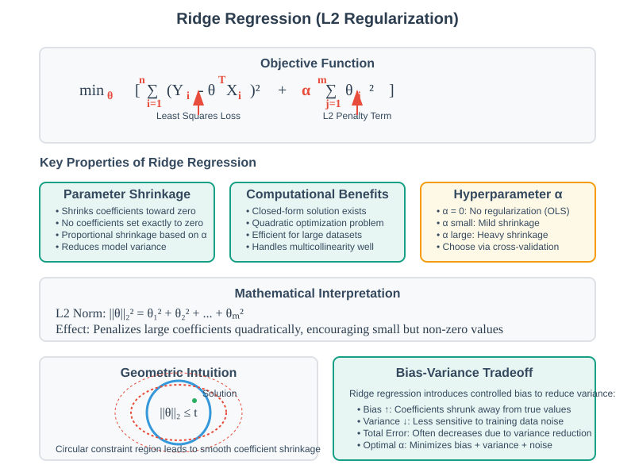
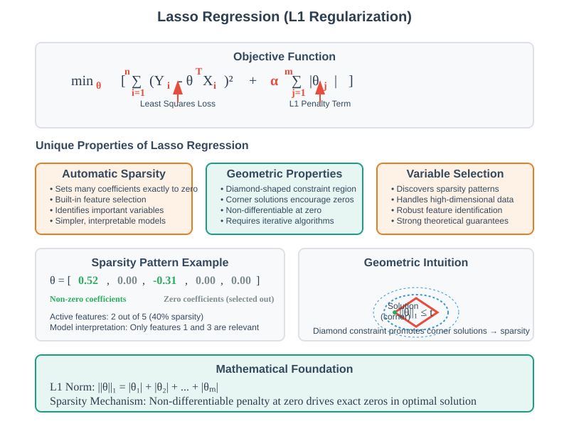
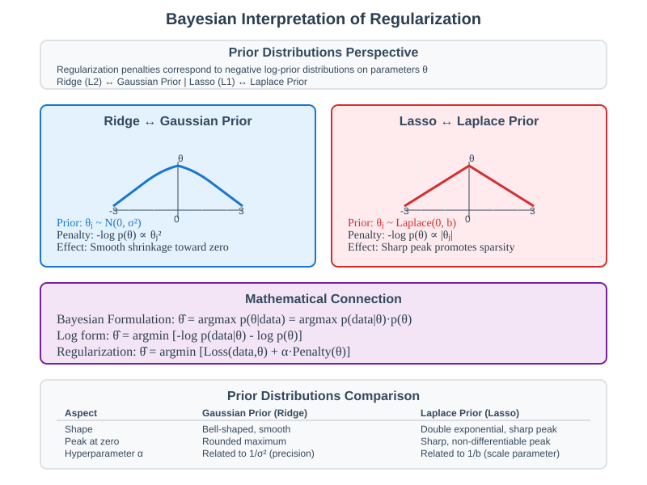
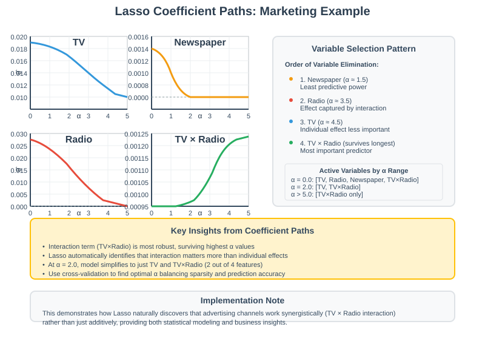
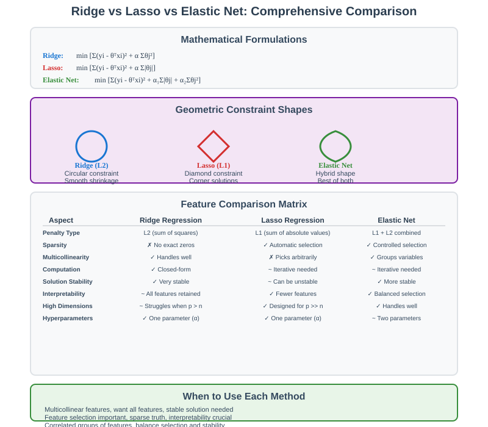

Regularization Techniques: Ridge and Lasso Regression
📋 Quick Navigation
- 🎯 Introduction
- 🛡️ Ridge Regression (L2 Regularization)
- ⚡ Lasso Regression (L1 Regularization)
- 🔍 Bayesian Interpretation
- 📊 Marketing Example: Coefficient Paths
- ⚖️ Ridge vs Lasso Comparison
- 🛠️ Implementation Guidelines
- 📚 References & Further Reading
🎯 Introduction
Regularization techniques are essential tools for preventing overfitting in machine learning models. By adding penalty terms to the loss function, regularization methods encourage simpler models that generalize better to unseen data. This documentation explores two fundamental regularization approaches: Ridge regression (L2) and Lasso regression (L1).
Core Motivation
The fundamental challenge in machine learning is balancing model complexity with generalization ability. Regularization addresses this by:
- Constraining parameter magnitudes to prevent extreme coefficients
- Reducing model sensitivity to noise in training data
- Improving generalization through controlled model complexity
- Enabling feature selection (in the case of Lasso)
Mathematical Foundation
Both Ridge and Lasso modify the standard least squares objective by adding penalty terms:
Standard OLS: min Σ(yi - θᵀxi)²
Regularized: min Σ(yi - θᵀxi)² + α·Penalty(θ)
Where α is the regularization hyperparameter controlling the penalty strength.
🛡️ Ridge Regression (L2 Regularization)
Mathematical Formulation
Ridge regression adds an L2 penalty term to the least squares objective:
min [Σ(Yi - θᵀXi)² + α Σθj²]
θ i=1 j=1
Where: - α ≥ 0 is the regularization hyperparameter - Σθj² is the L2 norm (sum of squared coefficients)

Key Properties
Parameter Shrinkage
- Bias towards zero: Coefficients are shrunk toward zero proportionally
- Smooth shrinkage: No coefficients are set exactly to zero
- Variance reduction: Lower sensitivity to training data variations
Computational Advantages
- Closed-form solution: Still involves solving linear equations
- Efficient computation: Quadratic objective function
- Scalable implementation: Works well with modern software
Hyperparameter Tuning
The regularization parameter α controls the bias-variance tradeoff:
| α Value | Effect | Use Case |
|---|---|---|
| α = 0 | No regularization (OLS) | High-quality, large datasets |
| α small | Mild shrinkage | Slight overfitting concerns |
| α moderate | Balanced shrinkage | Optimal generalization |
| α large | Heavy shrinkage | Strong overfitting or collinearity |
Ridge Implementation
from sklearn.linear_model import Ridge
from sklearn.model_selection import GridSearchCV
# Define parameter grid
param_grid = {'alpha': [0.001, 0.01, 0.1, 1, 10, 100]}
# Setup cross-validation
ridge_cv = GridSearchCV(
Ridge(),
param_grid,
cv=5,
scoring='neg_mean_squared_error'
)
# Fit and find optimal alpha
ridge_cv.fit(X_train, y_train)
optimal_alpha = ridge_cv.best_params_['alpha']
print(f"Optimal α: {optimal_alpha}")
⚡ Lasso Regression (L1 Regularization)
Mathematical Formulation
Lasso (Least Absolute Shrinkage and Selection Operator) uses an L1 penalty:
min [Σ(Yi - θᵀXi)² + α Σ|θj|]
θ i=1 j=1
Where: - α ≥ 0 is the regularization hyperparameter - Σ|θj| is the L1 norm (sum of absolute values)

Unique Properties
Automatic Feature Selection
- Sparse solutions: Many coefficients are set exactly to zero
- Built-in feature selection: Automatically identifies important features
- Model interpretability: Simpler models with fewer active features
Sparsity Mechanism
The L1 penalty has a unique geometric property that drives coefficients to exactly zero:
# Example: Lasso path showing feature selection
from sklearn.linear_model import LassoCV
import matplotlib.pyplot as plt
# Fit Lasso with cross-validation
lasso_cv = LassoCV(alphas=np.logspace(-4, 1, 50), cv=5)
lasso_cv.fit(X, y)
# Plot coefficient paths
plt.figure(figsize=(10, 6))
plt.plot(lasso_cv.alphas_, lasso_cv.mse_path_.T, alpha=0.6)
plt.axvline(lasso_cv.alpha_, color='red', linestyle='--',
label=f'Optimal α = {lasso_cv.alpha_:.3f}')
plt.xlabel('α (Regularization Strength)')
plt.ylabel('Mean Squared Error')
plt.legend()
plt.show()
Theoretical Guarantees
Under certain conditions, Lasso can recover the true sparse structure:
- Restricted Isometry Property (RIP): Ensures unique sparse solutions
- Coherence conditions: Guarantees correct feature selection
- Sample complexity: Requires O(s log p) samples for s-sparse, p-dimensional problems
When to Use Lasso
| Scenario | Recommendation | Reason |
|---|---|---|
| Feature selection needed | ✅ Lasso | Automatic sparsity |
| Interpretability important | ✅ Lasso | Fewer active features |
| Highly correlated features | ❌ Elastic Net | Lasso picks arbitrarily |
| p >> n (more features than samples) | ✅ Lasso | Built for high dimensions |
🔍 Bayesian Interpretation
Prior Distributions Perspective
Regularization can be understood through Bayesian inference by placing prior distributions on parameters:
Ridge Regression (L2)
- Prior: θj ~ Normal(0, σ²)
- Interpretation: Gaussian prior centered at zero
- Effect: Encourages small but non-zero coefficients
Lasso Regression (L1)
- Prior: θj ~ Laplace(0, b)
- Interpretation: Double exponential prior with sharp peak at zero
- Effect: Encourages exact zeros (sparsity)

Mathematical Connection
The penalty terms directly correspond to negative log-priors:
Ridge: -log p(θ) ∝ Σθj² (Gaussian prior)
Lasso: -log p(θ) ∝ Σ|θj| (Laplace prior)
This connection provides intuitive understanding: - α controls prior strength: Higher α = stronger belief in zero coefficients - Different priors, different solutions: Gaussian (smooth) vs Laplace (sparse)
📊 Marketing Example: Coefficient Paths
Dataset Overview
The marketing dataset predicts sales based on advertising spending across multiple channels: - TV advertising budget - Radio advertising budget - Newspaper advertising budget - TV × Radio interaction term
Lasso Coefficient Evolution
As the regularization parameter α increases, different coefficients follow distinct paths:

Key Observations
Variable Selection Process
| α Range | Active Variables | Interpretation |
|---|---|---|
| α ≈ 0 | TV, Radio, Newspaper, TV×Radio | No regularization (OLS) |
| α = 0.5 | TV, TV×Radio | Newspaper and Radio eliminated |
| α = 2.0 | TV×Radio only | Only interaction term survives |
| α >> 5 | None | Over-regularization (all zeros) |
Coefficient Behavior Patterns
- Newspaper coefficient: First to reach zero (least important)
- Radio coefficient: Eliminated at moderate α values
- TV coefficient: Gradually shrinks but survives longer
- TV×Radio interaction: Most robust feature, last to be eliminated
Practical Insights
# Analyze coefficient paths
from sklearn.linear_model import lasso_path
import numpy as np
# Generate regularization path
alphas, coefs, _ = lasso_path(X, y, alphas=np.logspace(-4, 1, 100))
# Identify optimal alpha via cross-validation
from sklearn.linear_model import LassoCV
lasso_cv = LassoCV(cv=5, random_state=42)
lasso_cv.fit(X, y)
print(f"Optimal α: {lasso_cv.alpha_:.4f}")
print(f"Active features: {np.sum(lasso_cv.coef_ != 0)}")
print(f"Selected features: {feature_names[lasso_cv.coef_ != 0]}")
⚖️ Ridge vs Lasso Comparison
Comprehensive Comparison

Detailed Feature Analysis
| Aspect | Ridge Regression | Lasso Regression |
|---|---|---|
| Penalty Type | L2 (sum of squares) | L1 (sum of absolute values) |
| Sparsity | No exact zeros | Automatic feature selection |
| Multicollinearity | Handles well (group selection) | Picks one from correlated group |
| Computational | Closed-form solution | Requires iterative algorithms |
| Interpretability | All features retained | Fewer features, clearer model |
| Stability | More stable solutions | Can be unstable with correlation |
Geometric Intuition
The different penalty shapes lead to fundamentally different solutions:
- Ridge (L2): Circular constraint region → smooth shrinkage
- Lasso (L1): Diamond-shaped constraint → corner solutions (sparsity)
Practical Decision Framework
def choose_regularization(X, y, feature_names):
"""
Decision framework for regularization choice
"""
n_samples, n_features = X.shape
correlation_matrix = np.corrcoef(X.T)
max_correlation = np.max(np.abs(correlation_matrix - np.eye(n_features)))
print(f"Dataset: {n_samples} samples, {n_features} features")
print(f"Max feature correlation: {max_correlation:.3f}")
if max_correlation > 0.9:
print("Recommendation: Elastic Net (handles multicollinearity)")
elif n_features > n_samples:
print("Recommendation: Lasso (high-dimensional setting)")
elif len(feature_names) > 20:
print("Recommendation: Lasso (feature selection needed)")
else:
print("Recommendation: Ridge (stable, interpretable)")
return None
Elastic Net: Best of Both Worlds
For many real-world problems, Elastic Net combines L1 and L2 penalties:
min [Σ(Yi - θᵀXi)² + α₁Σ|θj| + α₂Σθj²]
Benefits: - Handles multicollinearity like Ridge - Performs feature selection like Lasso - More stable than pure Lasso
🛠️ Implementation Guidelines
Scikit-learn Implementation
Basic Ridge and Lasso
from sklearn.linear_model import Ridge, Lasso, ElasticNet
from sklearn.preprocessing import StandardScaler
from sklearn.model_selection import train_test_split
# Data preprocessing
scaler = StandardScaler()
X_scaled = scaler.fit_transform(X)
X_train, X_test, y_train, y_test = train_test_split(
X_scaled, y, test_size=0.2, random_state=42
)
# Ridge Regression
ridge = Ridge(alpha=1.0)
ridge.fit(X_train, y_train)
ridge_score = ridge.score(X_test, y_test)
# Lasso Regression
lasso = Lasso(alpha=0.1)
lasso.fit(X_train, y_train)
lasso_score = lasso.score(X_test, y_test)
print(f"Ridge R²: {ridge_score:.3f}")
print(f"Lasso R²: {lasso_score:.3f}")
print(f"Lasso selected {np.sum(lasso.coef_ != 0)} features")
Cross-Validation for Hyperparameter Tuning
from sklearn.linear_model import RidgeCV, LassoCV
from sklearn.metrics import mean_squared_error
# Ridge with built-in CV
ridge_cv = RidgeCV(
alphas=np.logspace(-4, 4, 50),
cv=5,
scoring='neg_mean_squared_error'
)
ridge_cv.fit(X_train, y_train)
# Lasso with built-in CV
lasso_cv = LassoCV(
alphas=np.logspace(-4, 1, 50),
cv=5,
random_state=42
)
lasso_cv.fit(X_train, y_train)
# Evaluate models
ridge_pred = ridge_cv.predict(X_test)
lasso_pred = lasso_cv.predict(X_test)
print(f"Ridge optimal α: {ridge_cv.alpha_:.4f}")
print(f"Lasso optimal α: {lasso_cv.alpha_:.4f}")
print(f"Ridge MSE: {mean_squared_error(y_test, ridge_pred):.4f}")
print(f"Lasso MSE: {mean_squared_error(y_test, lasso_pred):.4f}")
Advanced Techniques
Feature Scaling Considerations
# Regularization is sensitive to feature scales
from sklearn.preprocessing import StandardScaler, RobustScaler
# Standard scaling (sensitive to outliers)
standard_scaler = StandardScaler()
X_standard = standard_scaler.fit_transform(X)
# Robust scaling (handles outliers better)
robust_scaler = RobustScaler()
X_robust = robust_scaler.fit_transform(X)
# Compare regularization results
lasso_standard = LassoCV(cv=5).fit(X_standard, y)
lasso_robust = LassoCV(cv=5).fit(X_robust, y)
print(f"Standard scaling - selected features: {np.sum(lasso_standard.coef_ != 0)}")
print(f"Robust scaling - selected features: {np.sum(lasso_robust.coef_ != 0)}")
Regularization Path Analysis
from sklearn.linear_model import lasso_path, ridge_path
import matplotlib.pyplot as plt
# Generate regularization paths
alphas = np.logspace(-4, 1, 100)
ridge_alphas, ridge_coefs, _ = ridge_path(X, y, alphas=alphas)
lasso_alphas, lasso_coefs, _ = lasso_path(X, y, alphas=alphas)
# Plot coefficient paths
fig, (ax1, ax2) = plt.subplots(1, 2, figsize=(15, 6))
# Ridge path
ax1.plot(ridge_alphas, ridge_coefs.T, alpha=0.7)
ax1.set_xscale('log')
ax1.set_xlabel('α (Regularization)')
ax1.set_ylabel('Coefficient Value')
ax1.set_title('Ridge Coefficient Paths')
ax1.grid(True, alpha=0.3)
# Lasso path
ax2.plot(lasso_alphas, lasso_coefs.T, alpha=0.7)
ax2.set_xscale('log')
ax2.set_xlabel('α (Regularization)')
ax2.set_ylabel('Coefficient Value')
ax2.set_title('Lasso Coefficient Paths')
ax2.grid(True, alpha=0.3)
plt.tight_layout()
plt.show()
Performance Monitoring
| Metric | Purpose | Implementation |
|---|---|---|
| Cross-validation score | Model selection | cross_val_score() |
| Coefficient paths | Feature behavior | lasso_path(), ridge_path() |
| Feature selection stability | Robustness | Bootstrap sampling |
| Prediction intervals | Uncertainty quantification | Conformal prediction |
📚 References & Further Reading
📖 Foundational Papers
- Regression Shrinkage and Selection via the Lasso (Tibshirani, 1996) - Original Lasso paper
- Ridge Regression: Biased Estimation for Nonorthogonal Problems (Hoerl & Kennard, 1970) - Ridge regression foundations
- Regularization and Variable Selection via the Elastic Net (Zou & Hastie, 2005) - Elastic Net methodology
🎓 Comprehensive Resources
- Elements of Statistical Learning (Hastie, Tibshirani, Friedman) - Chapter 3: Linear Methods for Regression
- Statistical Learning with Sparsity (Hastie, Tibshirani, Wainwright) - Advanced sparsity methods
- Pattern Recognition and Machine Learning (Bishop) - Bayesian perspective on regularization
🔧 Implementation Libraries
- Scikit-learn Linear Models - Comprehensive regularization toolkit
- Glmnet for Python - Fast coordinate descent algorithms
- Sparse Regression Toolkit - Advanced sparse methods
🚀 Interactive Learning
 Ridge vs Lasso Interactive Demo
Ridge vs Lasso Interactive Demo- Coefficient Paths Visualization
- Hyperparameter Tuning with Cross-Validation
🤖 Pre-trained Models & Datasets
- UCI Machine Learning Repository - Regression benchmark datasets
- OpenML Regression Tasks - Standardized regression benchmarks
- Papers with Code - Regularization - Latest research implementations
📊 Advanced Topics
- Sparse Group Lasso: Structured sparsity for grouped features
- Fused Lasso: Regularization with smoothness constraints
- Adaptive Lasso: Data-driven penalty weights
- Non-convex Regularization: SCAD, MCP penalties for better feature selection
🔬 Recent Research Directions
- High-Dimensional Statistics: A Non-Asymptotic Viewpoint (Wainwright, 2019) - Modern theory
- Convex Optimization (Boyd & Vandenberghe) - Optimization foundations
Created with ❤️ for the Machine Learning Community
Last Updated: September 2025